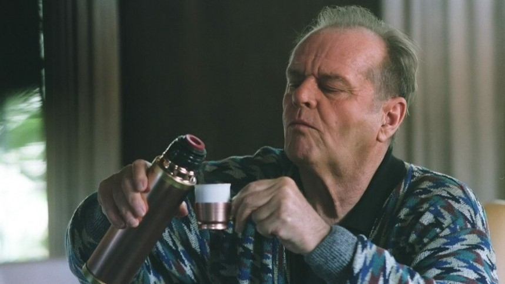

Бодрящий, крепкий, ароматный, терпкий, согревающий, пикантный, изысканный, неповторимый. Про кофе – один из любимых и интересных напитков человечества – можно сказать ещё много красивых слов. Мы пьём его каждый день, но даже не думаем о том, какие есть интересные факты о нём!

Где пить кофе с молоком после обеда считается дурным тоном? И почему кофе пытались запретить в разные века? В этой статье мы собрали 30 занимательных фактов об этом бодрящем напитке.
Факт №1
Кофе – второй самый продаваемый продукт в мире. Обойти его смогла лишь нефть.
Факт №2
Для того чтобы кофейные зёрна не теряли качество при сборе урожая, их до сих пор собирают вручную. Опытный сборщик за день может собрать 6-7 корзин кофейных бобов, каждая их которых весит около 100 килограммов.
Факт №3
Больше всего напиток любят в Финляндии: в среднем финн выпивает пять чашек кофе ежедневно.
Факт №4
1 октября принято считать Международным днём кофе. Изначально праздник появился в Японии, которая стоит на третьем месте по количеству употребляемого напитка в мире.
Факт №5
Международный Олимпийский комитет запретил спортсменам пить кофе во время соревнований, признав его допингом.
Факт №6
Чашка кофе содержит 0 калорий, поэтому напиток можно пить во время диеты.
Факт №7
В Италии пить кофе «навынос» не принято. Итальянцы любят собираться в кофейнях, чтобы неспешно насладиться вкусом любимого напитка, почитать газеты и поделиться друг с другом новостями.
Факт №8
Самая старая кофейня «Флориан», которая работает до сих пор, открылась в 1720 году в Венеции, на площади Сан-Марко. Попить кофе туда захаживали Рубинштейн, Казанова и сам великий Гёте.
Факт №9
Чтобы получить смертельную дозу кофеина, нужно выпить 100 чашек кофе.
Факт №10
Первую эспрессо-машину изобрел итальянец Луиджи Беццера в 1901 году. Именно тогда в Италии зародилась культура эспрессо-баров и привычка пить кофе стоя.
Факт №11
Кофеин широко применяют в уходовой косметике. Он уменьшает отечность, тонизирует сосуды, укрепляет клеточные мембраны и стимулирует синтез липидов.
Факт №12
В «кофе без кофеина» содержится небольшое количество кофеина.
Факт №13
Главный герой фильма «Пока не сыграл в ящик», которого сыграл актер Джек Николсон, всюду возил с собой дорогую кофемашину или термос, чтобы пить любимый сорт кофе — «Копи-лювак». Его получают путем ферментации кофейных зерен в кишечнике зверьков мусангов. Они едят их, переваривают и опорожняются, превращая зерна в гурманский и дорогой сорт.
Факт №14
В 1511-м кофе запретили в Мекке: тогда город находился под властью османов. Считалось, что напиток стимулирует праздность и радикальное мышление.
Факт №15
Екатерина II была настоящим кофеманом. Императрица выпивала по пять чашек крепкого кофе в день.
Факт №16
Пить кофе с лимоном или цитрусами придумали в Риме. Напиток называется Espresso Romano.
Факт №17
Starbucks — самая крупная сеть кофеен в мире.
Факт №18
Важные исторические события — протест Бостонское чаепитие и Великая Французская революция — планировались в кофейнях.
Факт №19
Любители холодного кофе придумали способ заваривания «колд брю»: его заваривают в холодной воде от восьми часов. Считается, что если охладить напиток льдом, он утратит половину вкусовых свойств.
Факт №20
В Эфиопии принято добавлять к кофе соль.
Факт №21
В XVII и XVIII веках кофе запрещали в разных европейских странах. Например, в Швеции запретили не только напиток, но посуду для него.
Факт №22
Самый популярный кофейный напиток в России — капучино.
Факт №23
Пить кофе с молоком после обеда считается дурным тоном в Италии. Вместо него, например, пьют Caffè alla nocciola — эспрессо с кремом из фундука и густой пенкой.
Факт №24
Фермер из Коста-Рики запатентовал способ выдерживания кофейных зерен в горячих источниках центрального высокогорья страны. Их вымачивают в термальной воде 12 часов при температуре 65-70 градусов, от чего зерна приобретают необычное послевкусие. Патент фермера заметила компания Nespresso и заключила с ним контракт на создание бленда (смеси нескольких сортов кофе) Master Origin Costa Rica.
Факт №25
В английском городке Банбери есть электростанция, где в качестве топлива используют кофейную гущу.
Факт №26
Кофейный напиток «Раф» придумали в Москве в кофейне Coffee Bean во второй половине 90-х. Постоянный посетитель Рафаэль попросил бариста придумать что-нибудь новое: специально для него смешали кофе со сливками и ванильным сахаром.
Факт №27
Знаменитыми поклонниками кофе были Вольтер и Бетховен.
Факт №28
Кофеин усиливает действие парацетамола и аспирина.
Факт №29
Молоко в кофе впервые начали добавлять во Франции в XVII веке.
Факт №30
В мире существует около 100 видов кофе.